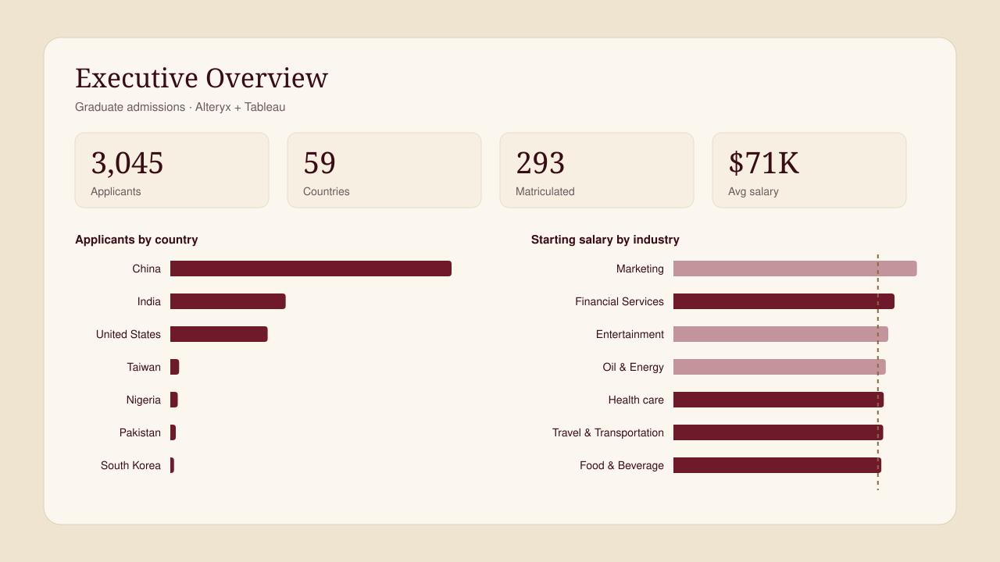
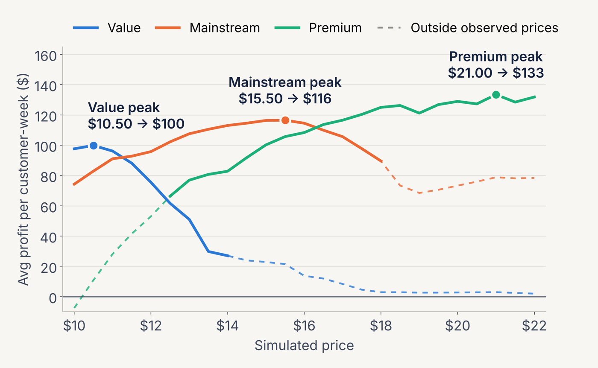
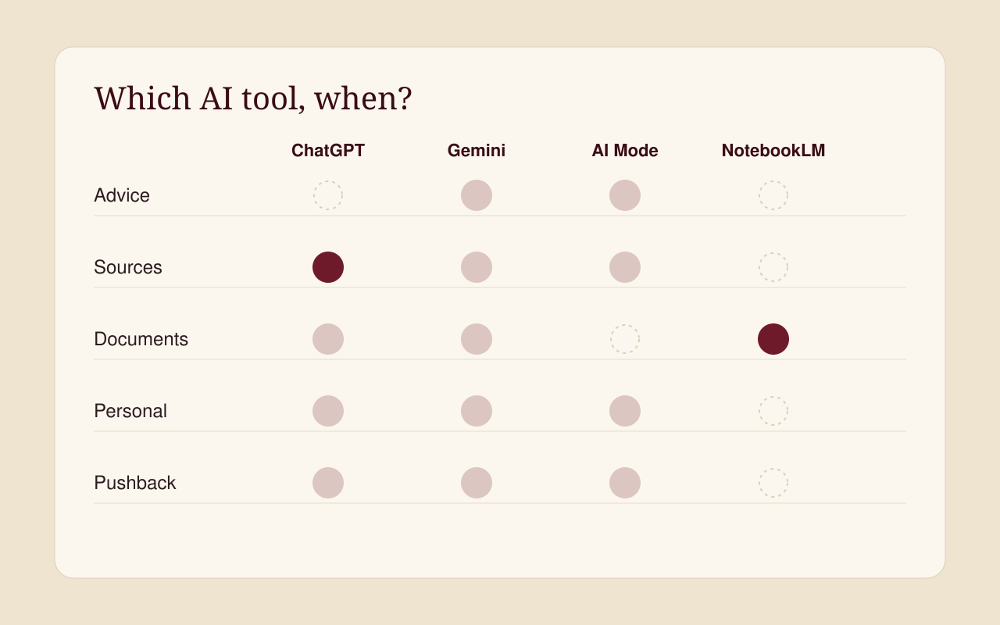
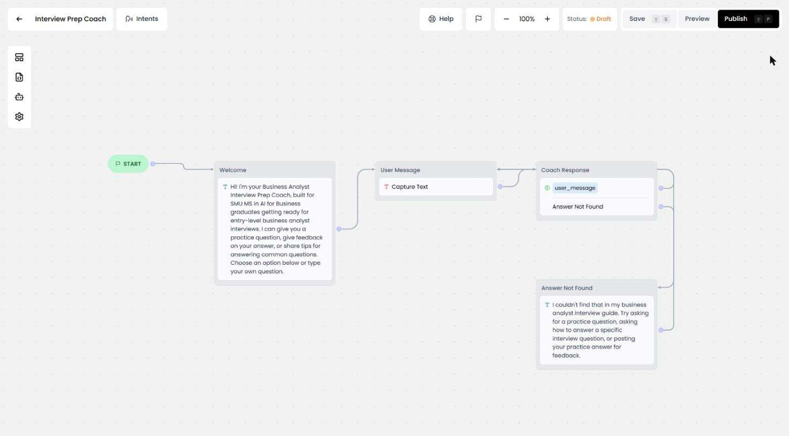
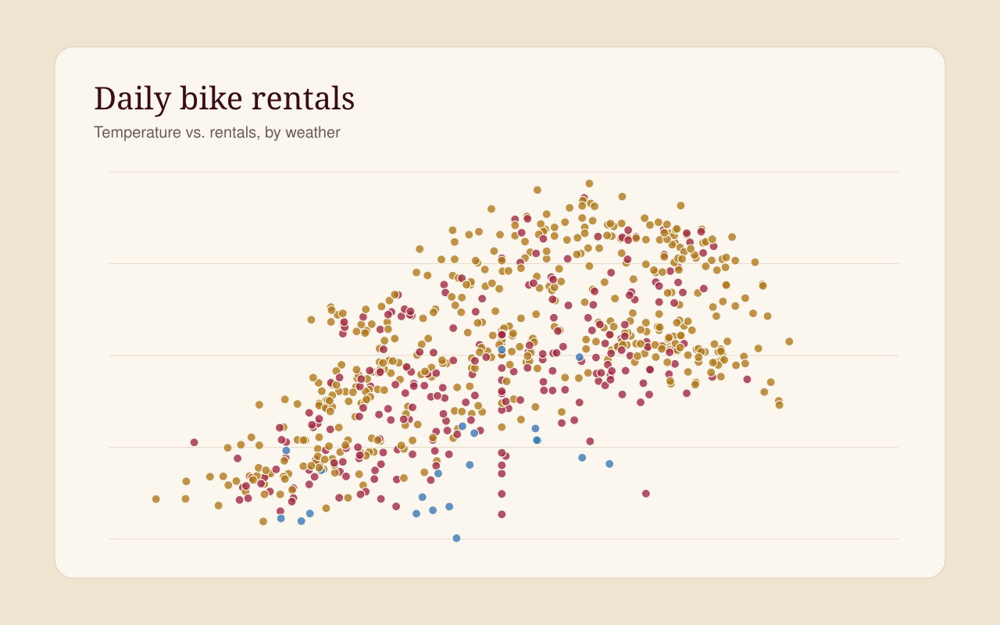

Dallas, TX · M.S. AI for Business, SMU ’27
Policy, people & the business of AI.
I’m Leah. I’m pursuing my M.S. in AI for Business at the SMU Cox School of Business, with a background in political science and political communication. I’m building a technical foundation in artificial intelligence that I want to bring into a people-facing role, keeping the human side at the center of my work.
Open to roles in AI governance, responsible AI deployment and integration, and AI policy at the corporate or legislative level
Policy training, technical tools.
I studied political science and public affairs because I care about how decisions affect people. Now I’m learning to back that instinct up with data.
I graduated from SMU in May 2026 with a B.S. in Political Science and a B.A. in Corporate Communications and Public Affairs. Along the way, I interned at a law office in Montana and at a public affairs and government relations firm in Washington, D.C., and I wrote a research paper on how the NSA’s PRISM program affected consumer trust in Big Tech.
Today I’m back at SMU for an M.S. in AI for Business. So far I’ve built dashboards in Alteryx and Tableau, optimization models in Excel and my own AI chatbot.
Outside of class, I’m a music lover who goes to concerts whenever I can, a loyal Seattle sports fan and a self-proclaimed chef who’s always trying new restaurants. I also love golf, and I work part-time at Dallas Country Club in a client-facing role serving the club’s members.
- i.
Responsible AI & governance
How privacy, regulation and public trust shape the way AI gets built and used.
- ii.
The business of creative industries
Music, film and the arts, and how AI can be part of them while respecting the people who make them.
- iii.
Relationships at the center
Good work depends on real relationships with people, and I want my career to reflect that.
Where I’ve grown.
Work, leadership and research, most recent first.
-
Mar 2026 – presentDallas, TX
Retail Associate
Dallas Country Club
I work part-time in a client-facing role serving the club’s members, alongside my master’s program.
-
May – Jul 2025Washington, D.C.
Intern, Public Affairs & Government Relations
AX Advocacy
I supported the government relations and public affairs teams with media monitoring, research and briefing prep for a range of clients.
- Led daily media research for three clients in clean energy, healthcare and government services, and delivered daily coverage briefings directly to them.
- Prepared 20+ briefing packets on House and Senate members so clients could walk into legislative meetings ready.
- Contributed to research on federal grant opportunities for AI technology through national defense appropriations; the client was awarded $3.75 million.
-
2024Research paper
Data Privacy & Government Regulation
Undergraduate research
I studied how the NSA’s PRISM surveillance program affected consumer trust in major tech companies and what that means for how government and industry handle personal data.
-
May – Jul 2024Helena, MT
Intern
Silverman Law Office
I supported attorneys with regulatory research, client outreach and records requests across corporate compliance and state-level legal matters.
- Led outreach to 200 business-owning clients about new Corporate Transparency Act filing requirements; 135 of them (67%) chose the firm to file for them.
- Researched the Department of Labor’s increase to the federal overtime threshold and its effect on clients; my work was published in the firm’s monthly newsletter.
- Tracked down a 1933 land deed at the county Clerk and Recorder’s office to support an active case.
-
2022 – 2026SMU · Dallas, TX
Marketing Committee Member
Phi Alpha Delta Pre-Law Fraternity
I created promotional materials and managed digital communications for monthly chapter meetings, events and fundraisers, and I helped build outside partnerships that benefited members.
Projects & case studies.
Class projects where I worked with real data and real tools, and what I learned from each one.

Graduate Admissions Executive Dashboard
I took a raw dataset of 3,000+ applicants I had never seen before and turned it into an interactive dashboard about who applies, how far they get and what graduates earn.
Read the case study
Humanizing the Data: AI Customer Segmentation
I used AI to find four distinct groups in 100 customer records and turned each one into a persona with its own marketing plan.
Read the case study
AI-Based Dynamic Pricing
I modeled demand for 200 customers to find the most profitable price for each one, then weighed how to use personalized pricing fairly.
Read the case study
Which AI Tool, When?
I gave the same prompts to ChatGPT, Gemini, Google AI Mode and NotebookLM to learn which tool fits which kind of task.
Read the case study
Building an AI Interview Coach
I built a no-code chatbot that gives business analyst candidates practice questions and feedback on their answers.
Read the case study
Cleaning and Exploring Bike Rental Data
I cleaned a messy bike-share dataset in Python, fixed impossible values and explored how weather and season shape ridership.
Read the case studyWhat I’ve learned & what I’m going to learn.
My M.S. in AI for Business runs in four modules, from August 2026 to April 2027. Here’s every course.
Fall 2026 · Modules 1–2
What I’ve learned
Managerial Statistics
MAST 6201Using statistics in Excel to describe data, test claims and make better business decisions.
Programming for Analytics
ITOM 6253Writing Python to clean, analyze and visualize data.
Decision Models
ITOM 6252Building optimization models in Excel to find the best decision under real-world constraints.
Data Visualization and Communication
ITOM 6212Preparing data in Alteryx and designing Tableau dashboards that tell a clear story.
Managing Your Career
MNGT 6001Planning my career and practicing interview skills like the STAR method.
Business Analytics Consulting
ITOM 6268Solving real company cases as a team with frameworks like A3 and Jobs to Be Done.
Generative AI for Business
ITOM 6216Comparing AI tools, writing better prompts and building a no-code chatbot.
AI for Marketing
MKTG 6247Using AI to segment customers, personalize prices and plan campaigns.
Predictive AI and ML
ITOM 6267Building machine learning models that learn from data to make predictions.
Spring 2027 · Modules 3–4
What I’m going to learn
Advanced Decision Models
ITOM 6264Taking optimization further with more advanced decision-making tools.
Agentic AI
ITOM 6229Learning how AI agents plan and take action, and how to design them well.
AI Strategy
STRA 6231Learning how companies decide where AI fits and how to make it pay off.
FinTech: Blockchain and Beyond
ITOM 6227Exploring how blockchain and other new technologies are changing finance.
Managing Your Career
MNGT 6001Continuing to build my career plan as graduation gets closer.
Big Data Platforms
ITOM 6258Working with the tools companies use to store and process data at scale.
Web and Social Media Analytics
ITOM 6219Measuring what happens online and turning it into insight.
Project Management
ITOM 6225Planning, running and delivering projects on time.
Ethical and Trust Issues in AI
ITOM 6223Digging into the questions of fairness, privacy and trust I care about most.
M.S. Artificial Intelligence for Business
SMU Cox School of Business · May 2027
B.S. Political Science · B.A. Corporate Communications & Public Affairs
SMU Dedman College & Meadows School of the Arts · May 2026